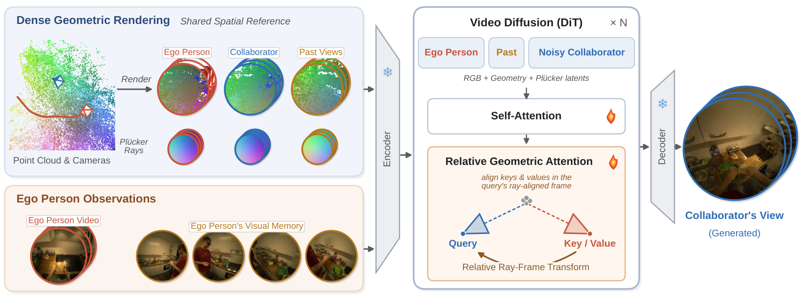

Playback:
From left to right: the ego person's input video, the 3D scene point cloud with the ego person's camera, the collaborator's camera and the ego person's past views selected as visual memory, followed by the collaborator's view generated by Ego2Ego alongside the ground truth. Ego2Ego generates the collaborator's view even when the collaborator is not visible to the ego person.
Contributions
- We introduce the task of generative visual perspective taking between collaborators, and evaluate existing novel view synthesis, camera-controlled and exo-to-ego video generation methods on the CoMind dataset.
- We propose Ego2Ego, a backbone-agnostic geometric method that combines shared 3D scene coordinates, relative ray-space attention and the ego person's visual memory.
- Across three video diffusion backbones, Ego2Ego consistently outperforms the cross-view video generation baselines in visual quality, Level-2 scene layout and collaborator motion.
Abstract
Visual perspective taking, the ability to infer what another person sees from their position, is fundamental to human collaboration. However, prior works reduced perspective taking to state estimation, geometric reconstruction, or discrete question answering, whereas existing cross-view video generation methods either inferred the target view from the input video alone or required an external camera that observes the target person. We introduce generative visual perspective taking: Given an ego person's egocentric video, a scene point cloud, and a collaborator's camera trajectory, the task is to generate the continuous egocentric video from the collaborator's perspective. This task is challenging given extreme viewpoint shifts, dynamic occlusions, and sparse visual overlap. We address these challenges with Ego2Ego – a set of backbone-agnostic geometric modules that provide a pretrained video diffusion model with the 3D scene geometry shared by both interactants. Ego2Ego renders dense, temporally consistent scene coordinate maps into every view as a shared spatial reference, aligns cross-view tokens in 3D ray space through relative geometric attention, and recovers regions outside the ego person's current view from the ego person's visual memory. Experiments on the CoMind dataset across three video diffusion backbones show that Ego2Ego consistently improves visual quality, Level-2 scene layout accuracy, and collaborator motion, outperforming state-of-the-art cross-view video generation baselines on every backbone. By generating the collaborator's egocentric video more accurately, Ego2Ego brings visual perspective taking to human-robot collaboration, where it can help infer what a human collaborator sees and does, and can turn single-person recordings into synchronised multi-perspective videos for robot learning.
Why visual perspective taking matters
Perspective taking is the ability to step outside one's own frame of reference and understand a situation from another person's point of view. Its visual form determines whether another person can see an object (Level 1) or how the scene looks from their position (Level 2). Humans rely on it in human–human collaboration, for example when handing over an object, when referring to an object that only the collaborator can see, or when avoiding obstructing another person's view or motion. Robots that collaborate with humans are therefore argued to need similar abilities. Prior work reduced visual perspective taking to estimating symbolic or geometric states, reconstructing the scene from another viewpoint or answering spatial questions. We study the more challenging task of visually synthesising what the collaborator actually sees.
This matters for human–robot collaboration in two complementary ways. When the ego person is a robot working with a human, generative perspective taking could let the robot infer what its human collaborator sees from their head trajectory, to plan complementary next actions and avoid redundant work. Conversely, when training a robot policy to act as the collaborator, Ego2Ego can turn single-person recordings into synchronised multi-perspective videos. Such recordings of two people in the same workspace are costly to capture, yet valuable for visuomotor policy learning; Ego2Ego only requires a wearable camera, a one-time scene scan and a camera trajectory.
Method
Ego2Ego equips a pretrained video diffusion transformer with three backbone-agnostic geometric modules that connect the two views through the 3D scene geometry shared by both individuals.

Overview of Ego2Ego. All conditions are encoded by the frozen VAE and form a single token sequence with the noisy collaborator latent.
Results
We compare Ego2Ego with cross-view video generation methods on the 1,020 test clips of CoMind. Ego2Ego achieves the best value on every metric. Even without cross-view pretraining, Ego2Ego on Wan2.2-5B and Wan2.1-14B surpasses the cross-view pretrained AnyView on most metrics, with higher PSNR (18.57 and 18.89 vs. 18.23 dB), higher SSIM (0.538 and 0.551 vs. 0.513), lower LPIPS (0.356 and 0.343 vs. 0.400), lower FVD (181.2 and 164.7 vs. 228.0), lower translation error (0.32 and 0.28 vs. 0.43 m) and higher Layout mIoU (20.7 and 26.1 vs. 15.9). Adding Ego2Ego to AnyView improves it further: PSNR by 1.34 dB (to 19.57 dB), LPIPS by 24% (to 0.306), Layout mIoU to 23.6 and Hand-mIoU to 30.9.
Comparison to cross-view video generation methods on CoMind
| Method | Task | Backbone | CV | PSNR↑ | SSIM↑ | LPIPS↓ | CLIP-I↑ | ViCLIP↑ | FVD↓ | Transl↓ | Rot↓ | Layout↑ | Hand↑ |
|---|---|---|---|---|---|---|---|---|---|---|---|---|---|
| TrajectoryCrafter† | NVS | CogVideoX-5B | ✓ | 13.13 | 0.312 | 0.642 | 0.72 | 0.50 | 915.1 | 0.48 | 23.5 | 2.1 | 17.6 |
| ReCamMaster | Camera | Wan2.1-1.3B | – | 15.64 | 0.435 | 0.512 | 0.82 | 0.84 | 347.8 | 0.40 | 16.2 | 8.2 | 14.6 |
| ✓ | 16.68 | 0.488 | 0.483 | 0.83 | 0.86 | 238.3 | 0.32 | 12.1 | 11.4 | 22.1 | |||
| CameraAnything‡ | Camera | Wan2.1-14B | – | 16.70 | 0.479 | 0.461 | 0.84 | 0.88 | 221.8 | 0.30 | 10.5 | 15.7 | 20.2 |
| WorldWander | Exo-to-ego | Wan2.2-5B | – | 15.94 | 0.449 | 0.516 | 0.81 | 0.82 | 288.7 | 0.48 | 25.0 | 6.1 | 17.5 |
| ✓ | 16.07 | 0.451 | 0.505 | 0.82 | 0.86 | 239.8 | 0.45 | 21.1 | 8.7 | 15.8 | |||
| EgoX | Exo-to-ego | Wan2.1-14B | – | 17.70 | 0.525 | 0.447 | 0.83 | 0.84 | 354.2 | 0.32 | 13.3 | 13.5 | 21.1 |
| ✓ | 17.56 | 0.514 | 0.456 | 0.83 | 0.87 | 281.6 | 0.33 | 12.1 | 14.7 | 21.2 | |||
| AnyView | NVS | Cosmos-2B | – | 16.32 | 0.465 | 0.561 | 0.79 | 0.67 | 1196.4 | 0.59 | 18.7 | 1.1 | 17.4 |
| ✓ | 18.23 | 0.513 | 0.400 | 0.87 | 0.89 | 228.0 | 0.43 | 9.3 | 15.9 | 27.1 | |||
| Ego2Ego (ours) | Ego-to-ego | Wan2.2-5B | – | 18.57 | 0.538 | 0.356 | 0.84 | 0.88 | 181.2 | 0.32 | 9.0 | 20.7 | 24.9 |
| Wan2.1-14B | – | 18.89 | 0.551 | 0.343 | 0.85 | 0.90 | 164.7 | 0.28 | 10.1 | 26.1 | 26.9 | ||
| AnyView | ✓ | 19.57 | 0.556 | 0.306 | 0.89 | 0.92 | 177.1 | 0.41 | 8.8 | 23.6 | 30.9 |
CV: initialised from the cross-view pretraining released by the authors. Layout and Hand: Layout mIoU and Hand-mIoU, in percent. Bold: best; underlined: second best. †Released model, not fine-tuned. ‡Trained only without cross-view pretraining.
Qualitative results
In each composite video, the top row shows the ego person's input video, the collaborator's ground-truth video and Ego2Ego built on Wan2.2-5B, Wan2.1-14B and AnyView; the bottom row shows six cross-view video generation baselines (for each baseline, the version with the higher PSNR in Table 1). Without a shared spatial reference and past ego-person frames, the baselines often copy content from the ego person's view or generate layouts that do not match the collaborator's viewpoint, whereas Ego2Ego places scene structures at the correct locations and generates the collaborator's hands across all three backbones.
Counterfactual trajectories
Because Ego2Ego conditions on the shared 3D scene geometry and the collaborator's camera trajectory, it can also synthesise what a collaborator would see along trajectories that were not recorded at the same time as the ego person's video. We pair the ego person's video with a real collaborator trajectory from another moment of the same session, in which the collaborator never appears in the ego person's view, and re-select the visual memory and re-render the scene coordinate maps. Each video shows the ego person's input, the 3D camera trajectories, the ground truth of the original trajectory (for reference only) and Ego2Ego's prediction along the counterfactual trajectory. In Example 1, the counterfactual trajectory stays by the refrigerator while the ego person works at the counter; all three backbones synthesise the opened refrigerator with hands reaching into it. This is promising for estimating what a collaborator would perceive from candidate positions in the workspace and for turning single-person recordings into diverse multi-perspective videos.
Without DGR and without visual memory
Human–robot interaction recordings are hard to collect, so a method for synthesising collaborator views should keep working when an input is missing. Ego2Ego does: the same trained models run when no scene scan is available or when a recording has just started and the ego person has no earlier frames.
Without dense geometric rendering (DGR)
When the scene coordinate maps are not available at test time, we set them to zero for the ego person, the collaborator and the memory frames, and generate with a single forward pass. Ego2Ego still reconstructs the scene, such as the counter and the sink, and the collaborator's hands from the ego person's video, the visual memory and relative geometric attention. In Clip 1 both participants work side by side at the counter; in Clip 2 the ego person works at the cutting board while the collaborator washes at the sink, outside the ego person's current view.
Without visual memory
At the start of a recording session no earlier ego-person frames exist and the visual memory is empty (29 of the 1,020 test clips). Because whole-memory dropout is applied during training, the full models run directly on these clips and still reconstruct the visible scene layout from the collaborator's viewpoint.
Limitations
Transparent surfaces. When the collaborator faces a window overlooking a building outside, the window glass and outdoor scene are absent from the scene point cloud and appear as an empty region in the collaborator's scene coordinate map. Wan2.2-5B and Wan2.1-14B fill this region with a blind or a wall, while AnyView reconstructs the outdoor view only partially.
Ego-person appearance. Because the ego person's egocentric camera observes only the ego person's own hands and arms and the static point cloud does not include moving people, the inputs provide no visual reference for the ego person's head or torso; when the ego person enters the collaborator's view, the generated person can therefore differ from the ego person in hair and facial appearance.
BibTeX
Acknowledgements
The authors gratefully acknowledge the scientific support and HPC resources provided by the Erlangen National High Performance Computing Center (NHR@FAU) of the Friedrich-Alexander-Universität Erlangen-Nürnberg (FAU) under the NHR project Project a113cb | JA-29757. NHR funding is provided by federal and Bavarian state authorities.